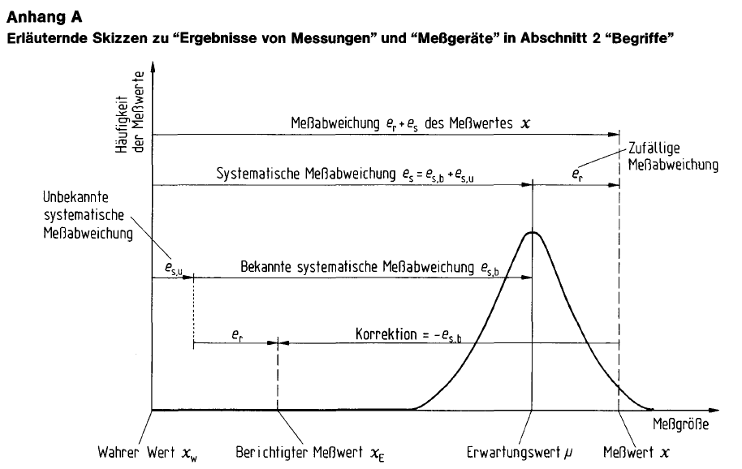
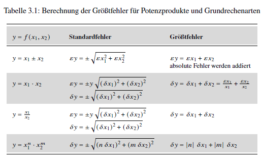

print(round(2.5), round(3.5))2 4
“Das Experimentieren ist ein dornenvoller Weg und so ganz sicher ist man sich nie.”
Wagner, Paul. 2015. “Einführung in die Physik I. PH I - 04 - Die Messgenauigkeit / Fehlerrechnung Teil 1.” Universität Wien Physik, YouTube, Zeitstempel 04:05
Kein Messgerät misst exakt und nicht alle Umwelteinflüsse können kontrolliert werden. Das Ziel der Fehlerrechnung ist es, die sich daraus ergebende Abweichung der Messwerte um den wahren Wert einer Größe zu quantifizieren.
Das Thema ist jedoch mit einigen Schwierigkeiten verbunden, die den Einstieg und die eigenständige Vertiefung des Themas erschweren.
Das Wort Fehler steckt zwar schon in der Überschrift dieses Kapitels, doch handelt es sich seit 1995 nicht mehr um einen genormten Begriff. Die DIN 1319 normt Grundbegriffe und Verfahren der Messtechnik. Die Norm ersetzt den Begriff des Fehlers durch die Begriffe Messabweichung und Messunsicherheit, umfasst aber darüber hinaus eine Vielzahl aufeinander bezogener Begriffsdefinitionen, Anmerkungen und Bemerkungen.
In diesem Kapitel werden die in der Fehlerrechnung gebräuchlichen Begriffe aufgegriffen, um die Verbindung zu den genormten Begriffen herzustellen. Im Allgemeinen werden jedoch die genormten Begriffe verwendet. Um den Einstieg in das Thema zu erleichtern, beschränkt sich dieses Kapitel auf Messungen mit:
Wiederholte Messungen enthalten eine zufällige Komponente statistischer Unsicherheit. Die statistische Unsicherheit kann immer nur mit einer Vertrauenswahrscheinlichkeit angegeben werden. Die Berechnung von Konfidenzintervallen haben wir in sec-normalverteilung und sec-hooke behandelt.
Zur statistischen Analyse gehört als erster Schritt, das Konfidenzniveau, das gelten soll, festzulegen. Hieraus leiten sich die zu verwendenden Vielfachen der Standardabweichung \(s\) bzw. des Korrekturfaktors \(t\) ab. Hierbei gibt es je nach Disziplin unterschiedliche Konventionen.
“In der Physik und der Vermessungstechnik begnügt man sich mit einer statistischen Sicherheit von 68,3% und setzt deshalb t = 1 […] (In der Industrie wird t = 2, in der Biologie t = 3 bevorzugt.)” [@HS-Aalen-2016 S. 4]
In der ingenieurswissenschaftlichen Literatur wird dieser Schritt nicht immer explizit gemacht (weil es üblich ist, \(1 s\) bzw. \(1 t\) zu verwenden). Dagegen heißt es in der DIN 1319: “Es ist üblich, das Vertrauensniveau (\(1 - \alpha\)) in Prozent anzugeben, wobei meist \(\alpha = 0,05\) (Vertrauensniveau: 95 %) benutzt wird.” [@DIN1319-1, S. 17]
Die Notation ist komplex: Neben dem lateinischen und griechischen Alphabet wird auch das kyrillische Alphabet verwendet. Trotzdem lassen sich Dopplungen von Symbolen für Formelzeichen und Einheiten nicht immer vermeiden (und die Federkonstante ist in dieser Hinsicht der denkbar ungünstigste Fall).
Die Notation wird außerdem uneinheitlich gehandhabt. Während in der DIN 1319 Messabweichungen mit \(e\) notiert werden, sind in der Literatur \(\epsilon\) (epsilon) und \(\Delta\) (Delta) gebräuchlich, wobei letzteres auch für den Größtfehler verwendet wird.
Übrigens: Das in der DIN verwendete \(e\) steht für error, also Fehler ( ¯\_(ツ)_/¯ ).
Bei Messungen können unterschiedliche Arten von Abweichungen des Messergebnisses vom tatsächlichen Wert der gemessenen Größe auftreten. Am gebräuchlichsten ist die Unterteilung in grobe, systematische und zufällige Fehler. Nach DIN 1319 sollte besser von systematischen und zufälligen Messabweichungen gesprochen werden. Grobe Fehler werden in der Norm jedoch nicht behandelt und hier ist der Fehlerbegriff durchaus angemessen.
Systematische Messabweichungen: unter identischen Bedingungen konstante, d. h. nach Betrag und Vorzeichen gleiche, Verzerrung der Messergebnisse durch Abweichungen der Messgeräte. Beispielsweise:
Zufällige Messabweichungen: statistische Streuung der Messwerte um ihren Erwartungswert. Beispielsweise:
Grobe Fehler: Verfälschen der Messergebnisse. Beispielsweise durch:
[@Hempel-2016, S. 1-2; @EdenGebhard-2024, S. 17-18]
Bestimmte Tätigkeiten, wie das Ablesen, können mehreren Fehlerarten zugehörig sein:
Grobe Fehler: Betroffene Werte streichen und Messung wiederholen.
Systematische Messabweichungen: Systematische Messabweichungen werden, wenn sie bekannt sind, korrigiert.
Zufällige Messabweichungen: Die statistische Streuung von Messwerten um den Erwartungswert wird quantifiziert.
Einige systematische und zufällige Messabweichungen können nur mit hohem Aufwand reduziert werden (genauere Messgeräte, größere Anzahl von Messvorgängen). Der Aufwand muss gegen den Gewinn an Genauigkeit abgewogen werden: Ist das Messergebnis mit der angegebenen Unsicherheit akzeptabel?
(@Hempel-2016, S. 2)
Die DIN 1319 normt Grundbegriffe und Verfahren der Messtechnik.
DIN 1319-4 befasst sich mit der Berechnung einer Ergebnisgröße \(Y\) durch eine Funktion wie z. B. die lineare Ausgleichsrechnung. Der Anwendungsfall des vorherigen Kapitels, die Federkonstante über den Regressionskoeffizienten \(\beta_1\) zu bestimmen, wird in der Norm nicht behandelt. Dieser Teil der Norm wird hier deshalb nicht vorgestellt.
Das Lernziel dieses Kapitels besteht darin, dass Sie die folgende Grafik aus der DIN 1319 erklären können.

[@DIN1319-1, S. 30]
Die drei wichtigsten Grundbegriffe sind:
Der in der Fehlerrechnung gebräuchliche Begriff des (Mess-)Fehlers meint im engeren Sinn die Messabweichung nach DIN 1319, also die tatsächliche Abweichung eines einzelnen Messwerts oder des arithmetischen Mittelwerts einer Messreihe (dem unberichtigten Messergebnis) vom wahren Wert der gemessenen Größe.
Die Messabweichung ist die: “Abweichung eines aus Messungen gewonnenen und der Meßgröße […] zugeordneten Wertes vom wahren Wert […]. Ist \(m\) der der Meßgröße zugeordnete Wert und \(x_w\) der wahre Wert, so ist die Meßabweichung des zugeordneten Wertes \(m - x_w\) […].” [@DIN1319-1, S. 12]
Die Messabweichung des unberichtigten Messergebnisses setzt sich additiv aus der zufälligen Messabweichung \(e_r\) und der systematischen Messabweichung \(e_s\) zusammen.
Das (berichtigte) Messergebnis \(\bar{x}_E\) ist das um die bekannte, systematische Messabweichung \(e_{s,b}\) berichtigte arithmetische Mittel einer Messreihe \(\bar{x}\), das als Schätzer des wahren Werts \(x_w\) verwendet wird. \(\bar{x}_E = \bar{x} - e_{s,b}\)
[@DIN1319-1, S. 11-13]
Der wahre Wert einer gemessenen Größe ist in der Regel unbekannt, sodass die tatsächliche Messabweichung ebenfalls nicht bekannt ist. Deshalb kann nur eine aus den Messgrößen gewonnene Schätzung der Messabweichung - die Messunsicherheit - angegeben werden. Der in der Fehlerrechnung gebräuchliche Begriff des (Mess-)Fehlers meint im weiteren Sinn die Messunsicherheit nach DIN 1319.
“Kennwert, der aus Messungen […] gewonnen wird und zusammen mit dem Meßergebnis […] zur Kennzeichnung eines Wertebereiches für den wahren Wert der Meßgröße […] dient.” [@DIN1319-1, S. 14, eigene Hervorhebung]
Während die Messabweichung ein Einzelwert ist, kennzeichnet die Messunsicherheit einen Wertebereich: “Die Meßunsicherheit ist von der Meßabweichung […] deutlich zu unterscheiden. Letztere ist nur die Differenz zwischen einem der Meßgröße zuzuordnenden Wert […] und dem wahren Wert. Die Meßabweichung kann gleich Null sein, ohne daß dies bekannt ist. Diese Unkenntnis drückt sich in einer Meßunsicherheit größer als Null aus.” [@DIN1319-3, S. 3]
Die Messunsicherheit einer Messgröße \(Y\) besteht einerseits aus der zufälligen Messabweichung \(e_r\) und andererseits aus der Unsicherheit über die systematische Messabweichung \(u(e_s)\).
zufällige Messabweichung
Wird eine Messgröße \(Y = y(x)\) durch mehrere, direkte Messungen bestimmt, so streuen die Messwerte \(x_i\) zufällig um ihren Erwartungswert \(\mu\) mit der Standardabweichung \(\sigma\). Der Erwartungswert \(\mu\) und die Standardabweichung \(\sigma\) sind in der Regel nicht bekannt und werden aus den Messwerten durch den arithmetischen Mittelwert \(\bar x\) und die empirische Standardabweichung \(s_{n-1}\) geschätzt. (siehe sec-einleitung)
Als Unsicherheit der zufälligen Streuung wird die empirische Standardabweichung des Mittelwerts verwendet.
\[ u(\bar x) = \frac{s_{n-1}}{\sqrt{N}} ~ = ~ \sqrt{\frac{1}{N(N-1)} \sum_{i=1}^{N}(x_i - \bar{x})^2} \]
[@DIN1319-3, Gleichung (4), S. 5, Notation angepasst]
systematische Messabweichung
Die systematische Messabweichung \(e_s\) setzt sich aus einem bekannten Anteil \(e_{s,b}\) und einem unbekannten Anteil \(e_{s,u}\) zusammen. Da der unbekannte Anteil nicht bestimmt werden kann, wird die gesamte systematische Messabweichung über die bekannte systematische Messabweichung \(e_{s,b}\) geschätzt. Daraus ergibt sich eine Unsicherheit über die tatsächliche gesamte systematische Messabweichung \(u(e_{s})\). Diese Unsicherheit besteht auch, wenn die bekannte systematische Messabweichung \(e_{s,b}\) Null ist, weil der unbekannte Anteil \(e_{s,u}\) ungleich Null sein kann.
In der DIN 1319 werden zwei Fälle unterschieden, je nachdem, ob die Unsicherheit \(u(e_{s})\) als vernachlässigbar eingeschätzt wird oder nicht. In diesem Kapitel gehen wir von einer vernachlässigbaren Unsicherheit \(u(e_{s})\) aus (Für den zweiten Fall siehe Beispiel).
Für den Fall, dass die Unsicherheit der systematischen Messabweichung nicht als vernachlässigbar angesehen wird, verweist die DIN 1319-3 auf Berechnungsregeln in Abschnitt 6.2.5 auf die wir hier nicht eingehen. (@DIN1319-3, S. 5-6)
Die Messunsicherheit des berichtigten Messergebnisses berechnet sich aus der quadratischen Kombination der Unsicherheiten der zufälligen und der systematischen Messabweichung.
\[ u(y) = \sqrt{u^2(\bar x) + u^2(e_s)} \]
[@DIN1319-3, Gleichung (8), S. 6, Notation angepasst]
In der DIN wird die zufällige Messabweichung statt mit \(u^2(\bar x)\) mit \(u^2(x_1)\) und die Unsicherheit der systematischen Messabweichung statt mit \(u^2(e_s)\) mit \(u^2(x_2)\) notiert.
Das berichtigte Messergebnis \(\bar{x}_E = y\) (in der DIN 1319 wechselt die Notation von \(\bar{x}_E\) zu \(y\)) berechnet sich durch die Korrektion der bekannten systematischen Messabweichung:
\[ y = \bar x - e_{s,b} \]
[@DIN1319-3, Gleichung (7), S. 6, Notation angepasst]
Das vollständige Messergebnis \(Y\) besteht aus dem berichtigten Messergebnis und einer Angabe über die Unsicherheit der Messung z. B. in der Form:
\[ Y = y \pm u(y) \]
[@DIN1319-3, Gleichung (9), S. 6]
Zusätzlich zum vollständigen Messergebnis kann ein Vertrauensbereich (auch: Vertrauensintervall oder Konfidenzintervall) angegeben werden. Der Berechnung von Konfidenzintervallen haben wir im Kapitel sec-normalverteilung vorgegriffen.
\[ y - t \cdot u(y) \le Y \le y + t \cdot u(y) \]
[@DIN1319-3, Gleichung (14), S. 7]
Die Wahl eines Vertrauensbereichs ist Ermessenssache. Die DIN 1319 formuliert dazu: “Es ist üblich, das Vertrauensniveau (\(1 - \alpha\)) in Prozent anzugeben, wobei meist \(\alpha = 0,05\) (Vertrauensniveau: 95 %) benutzt wird.” [@DIN1319-1, S. 17] “Dieses Vertrauensniveau von 95 % sollte verwendet werden, aber kein höheres.” [@DIN1319-3, S. 7]
So ergibt sich beispielsweise:
\[ y - t_{\alpha / 2} \cdot \frac{s_{n-1}}{\sqrt{n}} \le Y \le y + t_{\alpha / 2} \cdot \frac{s_{n-1}}{\sqrt{n}} \]
In der DIN wird der arithmetische Mittelwert einer Messreihe statt mit \(\bar{x}\) mit \(\bar{v}\) notiert.
In der DIN 1319 werden eine Reihe weiterer Begriffe definiert, die im folgenden Kasten zusammen mit den wichtigsten Grundbegriffen zusammengestellt wurden.
Messabweichung: “Abweichung eines aus Messungen gewonnenen und der Meßgröße […] zugeordneten Wertes vom wahren Wert […]. Ist \(m\) der der Meßgröße zugeordnete Wert und \(x_w\) der wahre Wert, so ist die Meßabweichung des zugeordneten Wertes \(m - x_w\) […].” [@DIN1319-1, S. 12]
Das Messergebnis \(\bar{x}_E\) ist das um die bekannte, systematische Messabweichung \(e_{s,b}\) berichtigte arithmetische Mittel einer Messreihe \(\bar{x}\), das als Schätzer des Erwartungswerts \(\mu\) verwendet wird.
\(\bar{x}_E = \bar{x} - e_{s,b}\)
[@DIN1319-1, S. 11-13]
Messunsicherheit \(u\) oder \(u(y)\): “Kennwert, der aus Messungen […] gewonnen wird und zusammen mit dem Meßergebnis […] zur Kennzeichnung eines Wertebereichs für den wahren Wert der Meßgröße […] dient.” [@DIN1319-1, S. 14]
Standardmessunsicherheit oder kurz Standardunsicherheit wird verwendet, wenn die Messunsicherheit durch eine Standardabweichung ausgedrückt wird. [@DIN1319-3, S. 3]
erweiterte Messunsicherheit \(U(y) = k \cdot u(y)\): Wertebereich, der den wahren Wert der Messgröße wahrscheinlich enthält. Der Erweiterungsfaktor \(k\) sollte zwischen 2 und 3 festgelegt werden, vorzugsweise wird \(k = 2\) verwendet. Der Erweiterungsfaktor \(k\) ist mitzuteilen, damit die Standardmessunsicherheit \(u(y) = U(y) / k\) ermittelt werden kann. [@DIN1319-3, S. 7]
Hinweis: Die erweiterte Messunsicherheit unterscheidet sich vom Konfidenzintervall dadurch, dass keine Normalverteilung unterstellt wird - es ist schlicht ein Faktor, ‘um auf Nummer sicher zu gehen’, dass der wahre Wert vom angegebenen Bereich eingeschlossen wird.
Das vollständige Messergebnis ist das Messergebnis mit quantitativen Angaben zur Messunsicherheit \(u\). \(x = \bar{x}_E \pm u\). [@DIN1319-1, S. 16]
Der Vertrauensbereich \(\bar x - t \cdot u(y) \le Y \le y + t \cdot u(y)\) kann zusätzlich zum vollständigen Messergebnis angegeben werden.
Hinweis: In der DIN wird der arithmetische Mittelwert einer Messreihe statt mit \(\bar{x}\) mit \(\bar{v}\) geschrieben.
In der Fehlerrechnung werden absolute und relative Fehler unterschieden. Hier sollte besser von absoluter und relativer Messunsicherheit gesprochen werden.
Die absolute Messunsicherheit \(u\) wird in der Einheit der gemessenen Größe angegebenen: \(u(m) = 0,2 ~ kg\). Das vollständige Messergebnis lautet: \(m = 5,0 \pm 0,2 ~ kg\) oder \(m = 5,0 ~ kg \pm 0,2 ~ kg\).
Die relative Messunsicherheit \(u_{rel}(m) = \frac{u(m)}{ | m | }\) wird entweder als Produkt in der Form \(m \cdot (1 \pm \frac{u(x)}{| m |})\) angegeben. Bspw.:
\(m = 5,0 ~ kg \cdot (1 \pm \frac{0,2 ~ kg}{5,0 ~ kg}) = 5,0 ~ kg \cdot (1 \pm 0,04)\)
Alternativ wird die relative Messunsicherheit in Prozent \(u_{rel}(m) = \frac{u(m)}{| m |} \cdot 100 ~ \%\) angegeben. Bspw.:
\(m = 5,0 ~ kg \pm 4 ~ \%\).
[@DIN1319-1, S. 9-10, 16; @DIN1319-3, S. 10]
In der DIN 1319 werden Messabweichungen mit \(e\), die Messunsicherheit mit \(u\) notiert. In der Literatur zur Fehlerrechnung wird zumeist der Begriff des (Mess-)Fehlers verwendet. Die Notation ist allerdings uneinheitlich.
Der absolute Fehler wird häufig mit \(\epsilon x\) (epsilon x) notiert. Üblich ist aber auch die Notation mit \(\Delta x\) (Delta), (beispielsweise [@HS-Aalen-2016; @Dinter-2011; @SchrüferEtAl2022]. \(\Delta\) wird aber ebenfalls für den Größtfehler verwendet.
Der relative Fehler wird auch mit \(\delta x\) (delta x) notiert, bspw: \(\delta x = 4 \%\).
Systematische Messabweichungen \(e(x)_{s}\) bewirken eine einseitige Verzerrung des Messergebnisses, sodass der Messwert immer zu hoch oder zu niedrig ausfällt. Zufällige Messabweichungen \(e(x)_{r}\) führen unkontrolliert mal zum Über-, mal zum Unterschätzen des Messwerts.
In der Regel werden sich die verschiedenen Messabweichungen teilweise ausgleichen. Als Größtfehler wird der ungünstigste Fall bezeichnet, bei dem sich alle Messabweichungen jeweils um ihren maximalen (oder minimalen) Wert gegenseitig verstärken, sodass der Messwert die maximal mögliche Abweichung vom (unbekannten) tatsächlichen Wert aufweist. Der Größtfehler wird als \(\Delta x\) (Delta x) notiert.
Der Größtfehler einer Messreihe für eine Größe wird ermittelt, indem man die Beträge der einzelnen Messabweichungen addiert.
\[ \Delta x = | e(x)_{s} | + | e(x)_{r} | \]
Da Messungen bei groben Fehlern als ungültig anzusehen sind, entfällt der Anteil grober Fehler \(| e(x)_{grob} |\).
(@EdenGebhard-2024, S. 35-36)
Werden mehrere Größen betrachtet, addieren sich die Größtfehler der beteiligten Größen zum Größtfehler der Ergebnisgröße. So gilt für eine Größe \(Y = f(x_1, x_2)\): \[ \Delta y = \Delta x_1 + \Delta x_2 \]
Der Größtfehler ist keine genormte Angabe nach DIN 1319, sondern eine vereinfachte Form der Fehlerabschätzung und überschätzt die wahrscheinliche Messunsicherheit.
“Für viele Betrachtungen, speziell in den Grundlagenpraktika der ersten Semester in technischen, naturwissenschaftlichen und ingenieurmäßigen Studiengängen, reicht es aus, den maximalen Fehler (absoluter Größtfehler) zu bestimmen.” (@EdenGebhard-2024, S. 35)
Bei der Angabe des vollständigen Messergebnisses ist die Anzahl der signifikanten oder zuverlässig bekannten Stellen zu beachten.
“Jede zuverlässig bekannte Stelle mit Ausnahme der Nullen, die die Position des Dezimalkommas angeben, wird signifikante Stelle genannt.” [@EdenGebhard-2024, S. 24]
“Gerundete numerische Unsicherheitwerte sind mit zwei (oder bei Bedarf mit drei) signifikanten Ziffern anzugeben. Sie sind aufzurunden. Das Meßergebnis ist an derselben Stelle wie die zugehörige Unsicherheit zu runden, z.B. \(y = 245,5716 ~ mm\) auf \(y = 245,57 ~ mm\), wenn \(u(y) = 0,4528 ~ mm\) auf \(u(y) = 0,46 ~ mm\) aufgerundet wird.” [@DIN1319-3, S. 6, eigene Hervorhebung]
Beispielsweise liegen die im vorherigen Kapitel verwendeten Abstandsmessungen im Format \(153,29\) vor, die Messwerte weisen also 5 signifikante Stellen auf. Für den arithmetischen Mittelwert einer Messreihe \(153,008889\) gelten deshalb ebenfalls 5 signifikante Stellen. Es wird an der ersten nicht mehr signifikanten Stelle gerundet, sodass der arithmetische Mittelwert mit \(153,01\) angegeben wird.
Die Anzahl signifikanter Stellen ist allerdings nicht immer zuverlässig zu bestimmen. Es gilt:
Angaben zur Messunsicherheit werden zwar aufgerundet. Trotzdem an dieser Stelle: Kennen Sie den Unterschied zwischen kaufmännischem und wissenschaftlichem Runden?
Runden und signifikante Stellen (Vorkurs Mathematik) von Edmund Weitz ist abrufbar auf YouTube. 2019
Python rundet wissenschaftlich:
print(round(2.5), round(3.5))2 4Das Ziel der Fehlerrechnung ist es, Unsicherheitsintervalle für die gemessene Größe zu ermitteln. Dafür stehen verschiedene Methoden zur Verfügung:
Bei der Auswahl der Methode besteht ein Ermessensspielraum. (@Hempel-2016, S. 2) Für Gebrauchsmessungen reicht es aus, die Unsicherheit im Prozentbereich anzugeben. Im Eichwesen oder beim Vergleich mit einem Normal werden genauere Angaben benötigt. [@SchrüferEtAl2022, S. 33]
Die Auswahl der geeigneten Methode hängt auch von den zur Verfügung stehenden Informationen ab. Beispielsweise hängt die im vorherigen Kapitel ermittelte Federkonstante von drei Größen ab:
der Masse \(m\), die mit einer Küchenwaage ermittelt wurde, deren Ablesegenauigkeit mit \(e_r(m) = 0,5 g = 0,0005 ~ kg\) geschätzt wird.
dem Abstand zum Gewicht bzw. nach der Aufbereitung der Daten der Ausdehnung der Feder \(\Delta x\), die mit einem elektronischen Abstandssensor und einem Arduino ermittelt wurden (Ultrasonic Ranging Module HC - SR04).
der statistischen Schätzung der Federkonstante \(k = \frac{m \cdot g}{\Delta x} = 33,019 \pm 0,378\) bzw. im festgelegten Vertrauensintervall \(k_{95\%} = 32,269 ≤ 33,019 ≤ 33,769\).
Im Folgenden werden identische Zeichen für Sekunde und Strecke \(s\), Masse und Meter \(m\), Gramm und die Konstante \(g\) sowie \(\Delta\) für die Veränderung einer Größe und den Größtfehler verwendet. Die Formeln sollten also mit großer Aufmerksamkeit gelesen werden.
Die Fehlerabschätzung wird verwendet, wenn
gemessen wird.
Da der wahre Wert einer Messgröße unbekannt ist, bezweckt die Fehlerabschätzung, die maximal mögliche Abweichung des Messwerts vom tatsächlichen Wert, also den Größtfehler, zu bestimmen. Bei einer einmaligen Messung gibt es keine statistische Komponente. In die Fehlerabschätzung eines einzelnen Messwerts gehen deshalb ein:
Der Größtfehler \(\Delta x\) ergibt sich aus der Addition der Beträge der bekannten systematischen Messabweichung und der geschätzten zufälligen Messabweichung: \(\Delta x = |e(x)_{s,b}| + |e(x)_{r}|\).
(@Hempel-2016, S. 3)
Mit einem digitalen Thermometer und einem thermoelektrischen Element vom Typ K wurde die Temperatur \(T = 112,1 ~ °C\) gemessen. Welche systematischen und zufälligen Messabweichungen sind bekannt und können angegeben werden (siehe Beispiel)?


Messgeräte mit digitaler Anzeige machen es leicht: Die Ablesegenauigkeit beträgt eine Skaleneinheit. Bei Messgeräten mit analoger Anzeige ist es Ermessenssache, welche Messgenauigkeit Sie angeben können bzw. möchten.
Sind Sie sich absolut sicher, dass Sie zwischen “genau auf dem Strich” und “zwischen zwei Strichen” unterscheiden können, beträgt Ihr Ablesefehler einen halben Skalenstrich. Sind Sie sich nicht sicher, beträgt Ihr Ablesefehler einen ganzen Skalenstrich.
systematische Messabweichung
Die absolute Messabweichung beträgt \(u(T) = 0,3 ~ °C\). Die relative Messabweichung beträgt \(0,05 ~ \%\). Das bedeutet:
\(\frac{u(T)}{112,1 °C} \cdot 100 ~ \% = 0,05 ~ \%\)
\(\frac{u(T)}{112,1 °C} \cdot 100 = 0,05\)
\(u(T) = 0,05 \cdot \frac{112,1 °C}{100}\)
\(u(T) = 0,05605 °C\)
Die bekannte systematische Messabweichung beträgt also:
\(e(T)_{s,b} = 0,3 ~ °C+ 0,05605 ~ °C = 0,35605 ~ °C\)
zufällige Messabweichung
Die zufällige Messabweichung beträgt eine Skaleneinheit, also:
\(e(T)_{r} = 0,1 ~ °C\)
Größtfehler
Der Größtfehler beträgt:
\(\Delta T = |e(T)_{s,b}| + |e(T)_{r}|\)
Die Messunsicherheit ist auf zwei Stellen aufzurunden:
\(\Delta T = |0,35605 °C| + |0,1 ~ °C| = 0,45605 ~ °C \approx 0,46 °C\)
Das vollständige Messergebnis lautet also \(T = 112,1 \pm 0,46 ~ °C\).
Was ist mit den konkreten Bedingungen eines Messvorgangs gemeint? Das soll mit zwei einfachen Messvorgängen demonstriert werden.
Hier können Sie mitmachen!
Sie benötigen:
Im ersten Messvorgang soll der Durchmesser der 1-Euro-Münze bestimmt werden.
Die Messung wird mit einem Messschieber mit Nonius 0,05 mm nach DIN 862 durchgeführt. Die DIN 862 normiert symmetrische Fehlergrenzen von Messschiebern. Die Fehlergrenze ist abhängig von der Skalengenauigkeit des Messschiebers sowie von der gemessenen Länge und ist aus einer Tabelle abzulesen. (DIN 862 wurde 2011 durch DIN EN ISO 13385-1 ersetzt, in der der Begriff der Abweichung verwendet wird. Die DIN 862 ist aber auf dem Messschieber aufgedruckt.)
Messwert: \(x = 23,25 ~ mm\)
Aus der Summe der Beträge ergibt sich der Größtfehler: \(\Delta x = |0,05| ~ mm + |0,025| ~ mm = 0,075 ~ mm\).
Das vollständige Messergebnis, bestehend aus dem Messwert und der Messunsicherheit lautet also: \(23,25 ± 0,075 ~ mm\). Der relative Größtfehler beträgt: \(23,25 ~ mm ± 0,32\%\).
Im zweiten Messvorgang soll die Länge des Daumens bestimmt werden. (Der Daumen besteht anatomisch aus nur 2 Fingergliedknochen)
Die Messung wird erneut mit dem Messschieber durchgeführt.
Messwert: \(x = 64,70 ~ mm\)
Aus der Summe der Beträge ergibt sich der Größtfehler \(\Delta x = |0,025| ~ mm + |0,05| ~ mm + |3| ~ mm = 3,075 ~ mm \approx 3,08 ~ mm\).
Das Messergebnis, bestehend aus dem Messwert und dem Fehlerintervall lautet also: \(64,70 ± 3,08 ~ mm\). Der relative Größtfehler beträgt: \(64,70 ~ mm ± 4,76 \%\).
Die Fehlerstatistik wird verwendet, wenn
gemessen wird.
Die Fehlerstatistik ist nur dann als zuverlässig anzusehen, wenn die Messabweichung zufällig ist, die Messwerte also betragsmäßig und mit wechselndem Vorzeichen streuen. Dann ist die Messabweichung in der ermittelten Standardabweichung enthalten. Liegt jedoch eine bekannte, systematische Messabweichung vor, muss das Messergebnis entsprechend korrigiert werden \(\bar x_E = \bar x - e_{s,b}\).
Der Fehlerstatistik haben wir in vorausgehenden Kapiteln mit der statistischen Beschreibung der empirischen Streuung des Mittelwerts vorgegriffen. Zur Wiederholung:
Dieses Konfidenzintervall sagt für eine gewählte Wahrscheinlichkeit aus, in welchem Bereich der Mittelwert einer erneut durchgeführten Messreihe oder, wenn die unbekannte systematische Messabweichung Null (oder vernachlässigbar) ist, der wahre Wert liegen wird.
Dagegen gibt die Standardabweichung \(s\) Auskunft darüber, in welchem Bereich ein einzelner Messwert liegen wird. Die Sicherheit dieser Aussage kann durch Ausweitung des Konfidenzintervalls erhöht werden (bspw. \(2 \cdot s\)).
[@Hempel-2016, S. 3-7]
Im folgenden Beispiel wird das Vorgehen gezeigt. Dabei wird auch die Pandas-Methode .sem() zur einfachen Berechnung des Standardfehlers vorgestellt.
Aus dem im vorherigen Kapitel behandelten Experiment wird die Messreihe für das Gewicht 503g ausgewählt.
dateipfad = "01-daten/hooke_data.csv"
hooke = pd.read_csv(filepath_or_buffer = dateipfad, sep = ';')
hooke.drop(index = 113, inplace = True) # Fehlwert, siehe vorheriges Kapitel
hooke_503g = hooke.loc[hooke['mass'] == 503, :]
print(hooke_503g.head(), hooke_503g.describe(), sep = "\n\n") no mass distance
40 40 503 158.43
41 41 503 158.43
42 42 503 158.60
43 43 503 158.76
44 44 503 159.05
no mass distance
count 10.00000 10.0 10.000000
mean 44.50000 503.0 159.314000
std 3.02765 0.0 0.781099
min 40.00000 503.0 158.430000
25% 42.25000 503.0 158.640000
50% 44.50000 503.0 159.220000
75% 46.75000 503.0 159.965000
max 49.00000 503.0 160.610000Betrachten wir für diese Messreihe noch einmal das arithmetische Mittel (das unbereinigte Messergebnis) und den Standardfehler des Mittelwerts (das statistische Streuungsmaß des Mittelwerts). Die Methode .sem() berechnet den empirischen Standardfehler des Mittelwerts (standardmäßig ist der Parameter ddof = 1 gesetzt.)
Ausgabe auf 3 Dezimalstellen genau.
print(f"Gewicht in Gramm: {hooke_503g['mass'].unique()}",
f"Mittelwert der Messwerte: {hooke_503g['distance'].mean():.3f} cm",
f"empirischer Standardfehler: {hooke_503g['distance'].sem():.3f} cm",
sep = "\n")Gewicht in Gramm: [503]
Mittelwert der Messwerte: 159.314 cm
empirischer Standardfehler: 0.247 cmDie Messunsicherheit wird auf 2 Dezimalstellen genau aufgerundet. Dafür kann die NumPy-Funktion np.ceil() verwendet werden. Diese rundet allerdings zur nächsten Ganzzahl, ein Parameter, um auf eine bestimmte Dezimalstelle zu runden, ist nicht verfügbar. Deshalb muss die Dezimalstelle um die gewünschte Anzahl Stellen durch Multiplikation mit der entsprechenden Zehnerpotenz verschoben werden. Für 2 Dezimalstellen entsprechend um \(10^2\): np.ceil(wert * 100) / 100.
wert = pd.Series([0.247])
print(np.ceil(wert * 100) / 100)
# mit Pandas-Methoden
print(wert.mul(100).apply(np.ceil).div(100))0 0.25
dtype: float64
0 0.25
dtype: float64Für die Verkettung mit weiteren Methoden in Pandas muss die Rückgabe der Funktion, ein NumPy-Skalar oder -Array, wieder in eine pd.Series umgewandelt werden.
print(f"Gewicht in Gramm: {hooke_503g['mass'].unique()}",
f"Mittelwert der Messwerte: {hooke_503g['distance'].mean():.3f} cm",
f"empirischer Standardfehler: { ( sem_hooke_503g:= pd.Series(hooke_503g['distance'].sem()).mul(100).apply(np.ceil).div(100) ).item() :.3f} cm",
f"vollständiges Messergebnis: {hooke_503g['distance'].mean().round(2):.2f} cm ± {sem_hooke_503g.item()} cm",
sep = "\n")Gewicht in Gramm: [503]
Mittelwert der Messwerte: 159.314 cm
empirischer Standardfehler: 0.250 cm
vollständiges Messergebnis: 159.31 cm ± 0.25 cmZusätzliche Angabe des 95-%-Konfidenzintervalls.
# t-Wert bestimmen für Signifikanzniveau (alpha-Niveau) 1 - 95 % wählen
alpha = 0.05
n = hooke_503g.shape[0] # Anzahl Zeilen
t_wert = scipy.stats.t.ppf(q = 1 - alpha/2, df = n - 1)
print(f"95-%-Konfidenzintervall : {hooke_503g['distance'].mean().round(2)} cm ± {t_wert:.4f} * {sem_hooke_503g.item()} cm",
f"95-%-Konfidenzintervall : {hooke_503g['distance'].mean().round(2)} cm ± {( t_wert * sem_hooke_503g.item() ).round(2):.2f} cm",
f"untere 95-%-Intervallgrenze: {hooke_503g['distance'].mean().round(2) - round(t_wert * sem_hooke_503g.item(), 2):.2f} cm",
f"obere 95-%-Intervallgrenze: {hooke_503g['distance'].mean().round(2) + round(t_wert * sem_hooke_503g.item(), 2):.2f} cm",
sep = "\n")95-%-Konfidenzintervall : 159.31 cm ± 2.2622 * 0.25 cm
95-%-Konfidenzintervall : 159.31 cm ± 0.57 cm
untere 95-%-Intervallgrenze: 158.74 cm
obere 95-%-Intervallgrenze: 159.88 cmDie Fehlerfortpflanzung wird verwendet, wenn
gemessen werden.
Um die Messunsicherheit einer Größe \(Y\), die durch eine Funktion \(y = f(x_1, x_2, ..., x_m)\) geschätzt wird, zu ermitteln, gibt es zwei Verfahren:
[@Hempel-2016, S. 8-9]
Die lineare Fehlerfortpflanzung betrachtet, wie sich die Größtfehler mehrerer gemessener Größen im ungünstigsten Fall auswirken. Es wird also der Größtfehler der gesuchten Größe \(Y\) berechnet. (vgl. @DIN1319-3, S. 9)
Für eine Funktion mit zwei Eingangsgrößen \(f = f(x_1, x_2)\) wird der Größtfehler \(\Delta f\) aus den Größtfehlern \(\Delta x_1\) und \(\Delta x_2\) ermittelt.
\[ f + \Delta f = f(x_1 + \Delta x_1, x_2 + \Delta x_2) \]
Unter der Voraussetzung gegenüber den Messwerten kleiner Fehler kann der Fehler \(\Delta f\) durch die Beträge der partiellen Ableitung des ersten Glieds der Taylorreihe berechnet werden (siehe Beispiel).
\[ f + \Delta f = f(x_1, x_2) + | \frac{\partial f(x_1, x_2)}{\partial x_1} | \cdot \Delta x_1 + | \frac{\partial f(x_1, x_2)}{\partial x_2} | \cdot \Delta x_2 \]
Wann sind die Fehler gegenüber den Messwerten klein? Dafür gibt es leider keine absolute Grenze. Es kommt hierbei darauf an, dass bei der Taylor-Entwicklung die Polynome höheren Grades deutlich kleiner als der lineare Term sind und somit vernachlässigt werden können, wenn das \(x\) klein ist. Die Entscheidung hängt letztlich von der benötigten Genauigkeit ab.
Die Taylorreihe - einfach erklärt von Denkbar ist abrufbar auf YouTube. 2015
Die partielle Ableitung ist die Ableitung einer Funktion mit mehreren Variablen nach einer Variablen, wobei die übrigen Variablen als Konstanten behandelt werden.
Für eine Funktion \(f(x, y) = 2x + y^2\) wird die partielle Ableitung nach x so ausgedrückt:
\(\frac{\partial f(x, y)}{\partial x}\)
Die partielle Ableitung \(\frac{\partial f(x, y)}{\partial x} = 2\). \(y^2\) wird als Konstante behandelt (z. B. \(5^2\) ) und ist abgeleitet Null.
Die partielle Ableitung \(\frac{\partial f(x, y)}{\partial y} = 2y\). \(2x\) wird als Konstante behandelt (z. B. \(2 \cdot 3\) ) und ist abgeleitet Null.
Der Größtfehler ergibt sich aus: \[ \Delta f = | \frac{\partial f(x_1, x_2)}{\partial x_1} | \cdot \Delta x_1 + | \frac{\partial f(x_1, x_2)}{\partial x_2} | \cdot \Delta x_2 \]
[@Hempel-2016, S. 9-10]
Bzw. in Kurzschreibweise für \(i = N\) Eingangsgrößen: \[ \Delta f(x_i) = \pm \sum_{i=1}^{N} | \frac{\partial f}{\partial x_i} \cdot \Delta x_i | \]
[nach @EdenGebhard-2024, S. 35, Notation angepasst]
Beispielhaft betrachten wir die erste Messung aus der Messreihe mit dem Gewicht 503 Gramm.
hooke_503g_einzelwert = hooke_503g.iloc[0, :].copy()
print(hooke_503g_einzelwert)no 40.00
mass 503.00
distance 158.43
Name: 40, dtype: float64Da mehrere Größen betrachtet werden, werden die Messwerte in eine SI-Einheit umgerechnet. Als Nullpunkt wird die erste Messung der Messreihe mit dem Gewicht 0 Gramm aufgefasst.
hooke_503g_einzelwert['mass'] = hooke_503g_einzelwert['mass'] / 1000
hooke_503g_einzelwert['distance'] = hooke_503g_einzelwert['distance'] / 100
nullpunkt = hooke[hooke['mass'] == 0].loc[: , 'distance'].head(n = 1) /100
print(f"Nullpunkt in Metern: {nullpunkt.item():.3f}\n")
hooke_503g_einzelwert['ausdehnung'] = (hooke_503g_einzelwert['distance'].item() -nullpunkt.item()) * -1
print(hooke_503g_einzelwert)Nullpunkt in Metern: 1.733
no 40.0000
mass 0.5030
distance 1.5843
ausdehnung 0.1489
Name: 40, dtype: float64Für die Federkonstante gilt (die Abstandsänderung \(\Delta x\) wird mit \(s\) notiert):
\[ k = \frac{m \cdot g}{\Delta{x}} = \frac{m \cdot g}{s} \]
Einsetzen der Werte (\(s\) steht nun für Sekunde, \(m\) für Meter): \[ k = \frac{0,503 ~ kg \cdot 9,81 m}{0,1489 ~ m \cdot s^2} = \frac{0,503 \cdot 9,81}{0,1489} \frac{N}{{m}} = 33.139 \frac{N}{{m}} \]
So gilt für den Größtfehler der Funktion: \[ \Delta k(m, s) = | \frac{\partial f(m, s)}{\partial m} | \cdot \Delta m + | \frac{\partial f(m, s)}{\partial s} | \cdot \Delta s \]
Im ersten Schritt werden die partiellen Ableitungen der Funktion \(k = \frac{m \cdot g}{s}\) gebildet. Die partielle Ableitung nach \(m\) lautet mit Faktorregel: \[ \frac{\partial f(m, s)}{\partial m} = \frac{\partial}{\partial m} \frac{m \cdot g}{s} = \frac{\partial}{\partial m} m \cdot \frac{g}{s} = 1 \cdot \frac{g}{s} = \frac{g}{s} \]
Die partielle Ableitung nach s lautet: \[ \frac{\partial f(m, s)}{\partial s} = \frac{\partial}{\partial s} \frac{m \cdot g}{s} = - \frac {m \cdot g}{s^{2}} \]
Der Größtfehler ergibt sich also durch: \[ \Delta k = | \frac{g}{s} | \cdot \Delta m ~ + ~ | (-) \frac {m \cdot g}{s^{2}} | \cdot \Delta s \]
Im zweiten Schritt wird der Größtfehler der beteiligten Größen ermittelt.
Die Messwerte, die Konstante \(g\) und die Größtfehler werden eingesetzt. \[ \Delta k = | \frac{9,81 m}{{s}^2 \cdot 0,1489 m} | \cdot 0,0005 ~ kg ~ + ~ | (-) \frac{0,503 ~ kg \cdot 9,81 m}{{s}^2 \cdot (0,1489 m)^2} | \cdot 0,0031 m \]
Trennen von Werten und Einheiten: \[ \Delta k = | \frac{9,81 \cdot 0,0005}{ 0,1489 } \frac{m \cdot }{{s}^2 \cdot m} | ~ + | (-) \frac{0,503 \cdot 9,81 \cdot 0,0031}{0,02217121} \frac{kg \cdot m^2}{{s}^2 \cdot m^2} | \]
Berechnen und Newton \(\frac{kg \cdot m}{s^2}\) einsetzen: \[ \Delta k = | 0,0329 \frac{N}{{m}} | ~ + | (-) 0,6899 \frac{N \cdot m}{{m^2}} | \]
Meter im zweiten Term kürzen: \[ \Delta k = |0,0329 \frac{N}{{m}} | ~ + | (-) 0,6899 \frac{N}{{m}} | \]
Die Messunsicherheit wird auf zwei Dezimalstellen aufgerundet. \[ \Delta k = 0,7228 \frac{N}{{m}} \approx 0,73 \frac{N}{{m}} \]
Das vollständige Messergebnis lautet somit: \[ k = 33,14 \frac{N}{m}; \Delta k = 0,73 \frac{N}{{m}} \]
Bei der Gauß’schen Fehlerfortpflanzung wird unterstellt, dass sich die Messunsicherheiten der beteiligten Größen teilweise kompensieren können. Dadurch wird eine realistischere Abschätzung der Messunsicherheit erreicht.
Die Ermittlung der Messunsicherheit ist in DIN 1319-3 geregelt. Für eine Funktion \(Y = f(x_1, x_2, ..., x_m)\) ermittelt sich die Messunsicherheit aus der Messunsicherheit der beteiligten Größen. Dazu werden die Varianzen der Mittelwerte verwendet (@DIN1319-3, Gleichung (29), S. 11). \[ u^2(x_i) = s^2(\bar{x_i}) = s_i^2/n_i ~ ; ~ s_i^2 = \frac{1}{n_i - 1} \sum_{j = 1}^{n_i} (x_{ij - \bar{x_i}})^2 \]
Hinweis: In der Regel wird man die empirische Standardabweichung \(s_{n-1}\) verwenden.
Hinweis: In der DIN wird der arithmetische Mittelwert einer Messreihe statt mit \(\bar{x}\) mit \(\bar{v}\) geschrieben.
Die Messunsicherheit der beteiligten Größen wird also über den Standardfehler des Mittelwerts der beteiligten Größen ermittelt: \[ u(x_i) = s_i/\sqrt{n_i} \]
Hinweis: In der Regel wird man die empirische Standardabweichung \(s_{n-1}\) verwenden.
[@DIN1319-3, S. 11]
Die Unsicherheit der Funktion \(y = f(x_1, x_2, ..., x_m)\) berechnet sich wie folgt (DIN 1319-3, Gleichung (43)):
\[ u(y) = \sqrt{\sum_{i = 1}^{m} (\frac{\partial f}{\partial x_i})^2 \cdot u^2(x_i)} \]
Die quadrierten Terme können auch zusammengefasst werden:
\[ u(y) = \sqrt{\sum_{i = 1}^{m} \left(\frac{\partial f}{\partial x_i} \cdot u(x_i)\right)^2} \]
Für eine Funktion mit zwei Eingangsgrößen \(y = f(x_1, x_2)\) berechnet sich die Unsicherheit der Ergebnisgröße beispielsweise wie folgt:
\[ u(y) = \sqrt{ (\frac{\partial f}{\partial x_1} \cdot \sigma_{x_1})^2 + (\frac{\partial f}{\partial x_2} \cdot \sigma_{x_2})^2 } \]
Hinweis: In der Regel wird man die empirische Standardabweichung \(s_{n-1} / \sqrt{N}\) verwenden.
Betrachten wir noch einmal die Messreihe für das Gewicht 503 Gramm. Es soll das vereinbarte Konfidenzniveau \(95 ~ \%\) gelten.
# Messdaten aus dem Kapitel hooke.qmd wiederherstellen
## Datei einlesen und Fehler entfernen
dateipfad = "01-daten/hooke_data.csv"
hooke = pd.read_csv(filepath_or_buffer = dateipfad, sep = ';')
hooke.drop(index = 113, inplace = True)
## Abstandsmessung auf Nullpunkt normieren
nullpunkt = hooke[hooke['mass'] == 0].loc[: , 'distance'].mean()
hooke['ausdehnung'] = hooke['distance'].sub(nullpunkt).mul(-1)
# Messreihe 503 Gramm auswählen
hooke_503g = hooke.loc[hooke['mass'] == 503, :].copy()
## Masse in kg, Abstand und Ausdehnung in m umrechnen
hooke_503g['mass'] = hooke_503g['mass'].div(1000)
hooke_503g['distance'] = hooke_503g['distance'].div(100)
hooke_503g['ausdehnung'] = hooke_503g['ausdehnung'].div(100)
# t-Wert bestimmen für Signifikanzniveau (alpha-Niveau) 1 - 95 % wählen
alpha = 0.05
n_ausdehnung = hooke_503g.shape[0] # Anzahl Zeilen
t_wert_ausdehnung = scipy.stats.t.ppf(q = 1 - alpha/2, df = n_ausdehnung - 1)
# Ausgabe
print(f"Gewicht in Kilogramm: {hooke_503g['mass'].unique()}",
f"Mittlere Ausdehnung: {hooke_503g['ausdehnung'].mean():.4f} m",
f"empirischer Standardfehler: { (sem_hooke_503g:= pd.Series(hooke_503g['ausdehnung'].sem())).item() :.6f} m",
f"t-Wert der Ausdehnung: {t_wert_ausdehnung:.4f}",
f"95-%-Intervallgrenzen: {(hooke_503g['ausdehnung'].mean() - t_wert_ausdehnung * sem_hooke_503g).item():.4f} m ≤ {hooke_503g['ausdehnung'].mean():.4f} m ≤ {(hooke_503g['ausdehnung'].mean() + t_wert_ausdehnung * sem_hooke_503g).item():.4f} m",
sep = "\n")Gewicht in Kilogramm: [0.503]
Mittlere Ausdehnung: 0.1432 m
empirischer Standardfehler: 0.002470 m
t-Wert der Ausdehnung: 2.2622
95-%-Intervallgrenzen: 0.1376 m ≤ 0.1432 m ≤ 0.1488 mFür die Federkonstante gilt (die Abstandsänderung \(\Delta x\) wird mit \(s\) notiert):
\[
k = \frac{m \cdot g}{\Delta{x}} = \frac{m \cdot g}{s}
\]
\[ k = \frac{0,503 ~ kg \cdot 9,81 m}{0,1432 ~ m \cdot s^2} = \frac{0,503 \cdot 9,81}{0,1432} \frac{N}{{m}} = 34,458\frac{N}{{m}} \]
Um die Unsicherheit der Ergebnisgröße \(k\) nach der Gauß`schen Fehlerfortpflanzung zu bestimmen, müsste die Masse des verwendeten Gewichts ebenfalls durch eine Messreihe bestimmt worden sein. (Wie Messreihen und Einzelmessungen kombiniert werden können, wird im nächsten Abschnitt gezeigt.) Deshalb wird angenommen, dass mehrere Messungen zur Ermittlung des Gewichts durchgeführt wurden. Die Messreihe sowie ihr Mittelwert und Standardfehler könnten wie folgt aussehen:
messreihe_503g = pd.Series([503 , 503, 504, 502, 503, 502, 503, 504])
messreihe_503g /= 1000
# t-Wert bestimmen für Signifikanzniveau (alpha-Niveau) 1 - 95 % wählen
alpha = 0.05
n_masse = messreihe_503g.shape[0] # Anzahl Elemente
t_wert_masse = scipy.stats.t.ppf(q = 1 - alpha/2, df = n_masse - 1)
# Ausgabe
print(f"arithmetisches Mittel der Masse: {messreihe_503g.mean()} kg",
f"empirischer Standardfehler: { (sem_messreihe_503g:= pd.Series(messreihe_503g.sem())).item() :.6f} kg",
f"t-Wert der Masse: {t_wert_masse:.4f}",
f"95-%-Intervallgrenzen: {(messreihe_503g.mean() - t_wert_masse * sem_messreihe_503g).item():.4f} kg - {(messreihe_503g.mean() + t_wert_masse * sem_messreihe_503g).item():.4f} kg",
sep = "\n")arithmetisches Mittel der Masse: 0.503 kg
empirischer Standardfehler: 0.000267 kg
t-Wert der Masse: 2.3646
95-%-Intervallgrenzen: 0.5024 kg - 0.5036 kgDie Gauß’sche Fehlerfortpflanzung wird ähnlich zur linearen Fehlerfortpflanzung berechnet.
\[ u(k(m, s)) = \sqrt{ (\frac{\partial f(m, s)}{\partial m} \cdot \sigma_{m})^2 + (\frac{\partial f(m, s)}{\partial s} \cdot \sigma_{s})^2 } \]
Die partiellen Ableitungen werden eingesetzt. \[ u(k(m, s)) = \sqrt{ ( \frac{g}{s} \cdot \sigma_{m})^2 + (- \frac {m \cdot g}{s^{2}} \cdot \sigma_{s})^2 } \]
Die Messwerte, die Konstante \(g\) und die Standardfehler der Mittelwerte werden eingesetzt. \[ u(k(m, s)) = \sqrt{ ( \frac{9,81 m}{{s}^2 \cdot 0,1432 m} \cdot 0,000267 ~ kg)^2 + ((-) \frac{0,503 ~ kg \cdot 9,81 m}{{s}^2 \cdot ( 0,1432 m)^2} \cdot 0,00247 m)^2 } \]
Trennen von Werten und Einheiten: \[ u(k(m, s)) = \sqrt{ ( \frac{9,81 \cdot 0,000267}{ 0,1432 } \frac{m \cdot kg}{{s}^2 \cdot m})^2 + ((-) \frac{0,503 \cdot 9,81 \cdot 0,00247}{0,02051} \frac{kg \cdot m^2}{{s}^2 \cdot m^2})^2 } \]
Berechnen, Newton \(\frac{kg \cdot m}{s^2}\) einsetzen und Meter im 2. Term kürzen: \[ u(k(m, s)) = \sqrt{ ( \frac{9,81 \cdot 0,000267}{ 0,1432 } \frac{N}{m})^2 + ((-) \frac{0,503 \cdot 9,81 \cdot 0,00247}{0,02051} \frac{N}{m})^2 } \]
Zusammenfassen: \[ u(k(m, s)) = \sqrt{ ( 0,0183 \frac{N}{m})^2 + ((-) 0,594 \frac{N}{m})^2 } \]
Ausrechnen: \[ u(k(m, s)) = 0,595 \frac{N}{m} \approx 0,60 \frac{N}{m} \]
Das vollständige Messergebnis lautet somit: \[ k = 34,46 \frac{N}{m} \pm 0,60 \frac{N}{m} \]
Zusätzlich zum vollständigen Messergebnis kann ein Vertrauensintervall angegeben werden. Entsprechend der vereinbarten Vertrauenswahrscheinlichkeit, sind die entsprechenden t-Werte als Korrekturfaktoren einzusetzen.
\[ u(k(m, s)) = \sqrt{ ( \frac{g}{s} \cdot t_{\alpha/2} \cdot \sigma_{m})^2 + (- \frac {m \cdot g}{s^{2}} \cdot t_{\alpha/2} \cdot \sigma_{s})^2 } \]
Dies sind für die Masse \(t = 2,3646\) und für die Ausdehnung \(t = 2,2622\).
Die Messwerte, die Konstante \(g\), der Standardfehler des Mittelwerts und der t-Wert werden in den ersten Term eingesetzt. \[ (\frac{g}{s} \cdot t_{\alpha/2} \cdot \sigma_{m})^2 = ( \frac{9,81 m}{{s}^2 \cdot 0,1432 m} \cdot 2,3646 \cdot 0,000267 ~ kg)^2 \]
Trennen von Werten und Einheiten, Newton \(\frac{kg \cdot m}{s^2}\) einsetzen: \[ (\frac{9,81 \cdot 2,3646 \cdot 0,000267}{ 0,1432 } \frac{m \cdot kg}{{s}^2 \cdot m})^2 = (0,0433 \frac{N}{m})^2 \]
Die Messwerte, die Konstante \(g\), der Standardfehler des Mittelwerts und der t-Wert werden in den zweiten Term eingesetzt. \[ (- \frac {m \cdot g}{s^{2}} \cdot t_{\alpha/2} \cdot \sigma_{s})^2 = ((-) \frac{0,503 ~ kg \cdot 9,81 m}{{s}^2 \cdot ( 0,1432 m)^2} \cdot 2,2622 \cdot 0,00247 m)^2 \]
Trennen von Werten und Einheiten, Newton \(\frac{kg \cdot m}{s^2}\) einsetzen und \(m\) kürzen: \[ ((-) \frac{0,503 \cdot 9,81 \cdot 2,2622 \cdot 0,00247}{0,02051} \frac{kg \cdot m^2}{{s}^2 \cdot m^2})^2 = ((-) 1,344 \frac{N}{m})^2 \]
Die Formel lautet somit: \[ u(k(m, s)) = \sqrt{ ( 0,0433 \frac{N}{m})^2 + ((-) 1,344 \frac{N}{m})^2 } \]
Ausrechnen: \[ u(k(m, s)) = 1,345 \frac{N}{m} \approx 1,35 \frac{N}{m} \]
Die Intervallgrenzen lauten somit: \[ k = 34,46 \frac{N}{m} \pm 1,35 \frac{N}{m} \]
Also: \[ k_{95\%} = 33,11 \frac{N}{m} \le 34,46 \frac{N}{m} \le 35,81 \frac{N}{m} \]
Einige Funktionen sind besonders leicht zu berechnen. In der folgenden Tabelle sind Rechenwege zur Ermittlung der Messunsicherheit nach der Gauß’schen Fehlerfortpflanzung (Standardfehler) und nach der linearen Fehlerfortpflanzung (Größtfehler) aufgelistet.

[@EdenGebhard-2024, S. 36]
Ein Sonderfall ist die Ermittlung der Messunsicherheit, wenn diese sich aus statistischen Vertrauensbereichen und abgeschätzten Fehleranteilen aus einer Einzelmessung zusammensetzt.
Für die Berechnung eines Gesamtfehlers muss ein Kompromiss eingegangen werden.
“Beide Verfahren sind wohl gleich gut (oder schlecht) als Kompromiss in der Laborpraxis geeignet.” (@Hempel-2016, S. 9)
(@Hempel-2016, S. 8 - 9)
Die DIN 1319 behandelt nur die Gauß’sche Fehlerfortpflanzung. Liegt für eine Eingangsgröße nur ein einzelner Wert vor, wird dieser als Schätzwert für diese Größe verwendet. Die Unsicherheit ist aus den verfügbaren Informationen oder nach der Erfahrung, zum Beispiel aus früheren Messungen, anzusetzen. [@DIN1319-3, S. 11]
Als Beispiel verwenden wir wieder die Messreihe für das Gewicht 503 Gramm.
# Ausgabe
print(f"Gewicht in Kilogramm: {hooke_503g['mass'].unique()}",
f"Mittlere Ausdehnung: {hooke_503g['ausdehnung'].mean():.4f} m",
f"empirischer Standardfehler: { (sem_hooke_503g:= pd.Series(hooke_503g['ausdehnung'].sem())).item() :.6f} m",
f"t-Wert der Ausdehnung: {t_wert_ausdehnung:.4f}",
f"95-%-Intervallgrenzen: {(hooke_503g['ausdehnung'].mean() - t_wert_ausdehnung * sem_hooke_503g).item():.4f} m ≤ {hooke_503g['ausdehnung'].mean():.4f} m ≤ {(hooke_503g['ausdehnung'].mean() + t_wert_ausdehnung * sem_hooke_503g).item():.4f} m",
sep = "\n")Gewicht in Kilogramm: [0.503]
Mittlere Ausdehnung: 0.1432 m
empirischer Standardfehler: 0.002470 m
t-Wert der Ausdehnung: 2.2622
95-%-Intervallgrenzen: 0.1376 m ≤ 0.1432 m ≤ 0.1488 mAnalog zur Fehlerabschätzung ergibt sich der Größtfehler der Federkonstante durch: \[ \Delta k = | \frac{g}{s} | \cdot \Delta m ~ + ~ | (-) \frac {m \cdot g}{s^{2}} | \cdot \Delta s \]
Die Messwerte, die Konstante \(g\) und die Größtfehler werden eingesetzt. \[ \Delta k = | \frac{9,81 m}{{s}^2 \cdot 0,1432 m} | \cdot 0,0005 ~ kg ~ + ~ | (-) \frac{0,503 ~ kg \cdot 9,81 m}{{s}^2 \cdot (0,1432 m)^2} | \cdot 0,00247 m \]
Trennen von Werten und Einheiten: \[ \Delta k = | \frac{9,81 \cdot 0,0005}{ 0,1432 } \frac{m \cdot kg}{{s}^2 \cdot m} | ~ + | (-) \frac{0,503 \cdot 9,81 \cdot 0,00247}{0,020506} \frac{kg \cdot m^2}{{s}^2 \cdot m^2} | \]
Berechnen und Newton \(\frac{kg \cdot m}{s^2}\) einsetzen: \[ \Delta k = | 0,0342 \frac{N}{{m}} | ~ + | (-) 0,594 \frac{N \cdot m}{{m^2}} | \]
Meter im zweiten Term kürzen: \[ \Delta k = |0,0342 \frac{N}{{m}} | ~ + | (-) 0,594 \frac{N}{{m}} | \]
Die Messunsicherheit wird auf zwei Dezimalstellen aufgerundet. \[ \Delta k = 0,628 \frac{N}{{m}} \approx 0,63 \frac{N}{{m}} \]
Das Messergebnis und der Größtfehler lauten somit: \[ k = 34,46 \frac{N}{m}; \Delta k = 0,63 \frac{N}{{m}} \]
Die Unsicherheit der Federkonstante berechnet sich durch: \[ u(k(m, s)) = \sqrt{ ( \frac{g}{s} \cdot \Delta m)^2 + (- \frac {m \cdot g}{s^{2}} \cdot \sigma_{s})^2 } \]
Die Messwerte, die Konstante \(g\) und der abgeschätzte Fehleranteil (Größtfehler) der Masse werden in den ersten Term eingesetzt. \[ (\frac{g}{s} \cdot \Delta m)^2 = ( \frac{9,81 m}{{s}^2 \cdot 0,1432 m} \cdot 0,0005 ~ kg)^2 \]
Trennen von Werten und Einheiten, Newton \(\frac{kg \cdot m}{s^2}\) einsetzen: \[ (\frac{9,81 \cdot 0,0005}{ 0,1432 } \frac{m \cdot kg}{{s}^2 \cdot m})^2 = (0,0342 \frac{N}{m})^2 \]
Die Masse des Gewichts, die Konstante \(g\) und der Standardfehler des Mittelwerts der Ausdehnung werden in den zweiten Term eingesetzt. \[ (- \frac {m \cdot g}{s^{2}} \cdot \sigma_{s})^2 = ((-) \frac{0,503 ~ kg \cdot 9,81 m}{{s}^2 \cdot ( 0,1432 m)^2} \cdot 0,00247 m)^2 \]
Trennen von Werten und Einheiten, Newton \(\frac{kg \cdot m}{s^2}\) einsetzen und \(m\) kürzen: \[ ((-) \frac{0,503 \cdot 9,81 \cdot 0,00247}{0,02051} \frac{kg \cdot m^2}{{s}^2 \cdot m^2})^2 = ((-) 0,594 \frac{N}{m})^2 \]
Die Formel lautet somit: \[ u(k(m, s)) = \sqrt{ ( 0,0342 \frac{N}{m})^2 + ((-) 0,594 \frac{N}{m})^2 } \]
Ausrechnen: \[ u(k(m, s)) = 0,595 \frac{N}{m} \approx 0,60 \frac{N}{m} \]
Das vollständige Messergebnis lautet somit: \[ k = 34,46 \frac{N}{m}; \Delta k = 0,60 \frac{N}{{m}} \]
Für das 95-%-Konfidenzintervall wird der t-Wert der Ausdehnung \(t = 2,2622\) eingesetzt. \[ u(k(m, s)) = \sqrt{ ( \frac{g}{s} \cdot \Delta m)^2 + (- \frac {m \cdot g}{s^{2}} \cdot t_{\alpha/2} \cdot \sigma_{s})^2 } \]
Der erste Term lautet unverändert:
\[ (\frac{g}{s} \cdot \Delta m)^2 = ( \frac{9,81 m}{{s}^2 \cdot 0,1432 m} \cdot 0,0005 ~ kg)^2 = ( 0,0342 \frac{N}{m})^2 \]
Die Masse, die Konstante \(g\), der Standardfehler des Mittelwerts der Ausdehnung und der t-Wert der Ausdehnung \(t = 2,2622\) werden in den zweiten Term eingesetzt. \[ (- \frac {m \cdot g}{s^{2}} \cdot t_{\alpha/2} \cdot \sigma_{s})^2 = ((-) \frac{0,503 ~ kg \cdot 9,81 m}{{s}^2 \cdot ( 0,1432 m)^2} \cdot 2,2622 \cdot 0,00247 m)^2 \]
Trennen von Werten und Einheiten, Newton \(\frac{kg \cdot m}{s^2}\) einsetzen und \(m\) kürzen: \[ ((-) \frac{0,503 \cdot 9,81 \cdot 2,2622 \cdot 0,00247}{0,02051} \frac{kg \cdot m^2}{{s}^2 \cdot m^2})^2 = ((-) 1,344 \frac{N}{m})^2 \]
Die Formel lautet somit: \[ u(k(m, s)) = \sqrt{ ( 0,0342 \frac{N}{m})^2 + ((-) 1,344 \frac{N}{m})^2 } \]
Ausrechnen: \[ u(k(m, s)) = 1,344 \frac{N}{m} \approx 1,35 \frac{N}{m} \]
Die Intervallgrenzen lauten somit: \[ k_{95\%} = 33,11 \frac{N}{m} \le 34,46 \frac{N}{m} \le 35,81 \frac{N}{m} \]